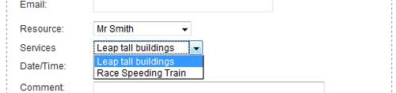

The first thing to point out is that Services are OPTIONAL - you do not need to set up any services unless you feel they would help or be useful to you.
What is a Service?
A Service is an arbitrarily define entity that can be associated with resource. Services sit below resources in the structure hierarchy.
Why use Services?
If your resource can be booked to perform multiple tasks. Creating services for a resource allows your user to choose the resource AND what service is to be performed. An example would be a staff member in a Spa, she can be booked to do various services, massage, manicure, etc.
Things to know about Services.
You can create as many services as you wish for a resource. A service is specific to a resource but you can copy services to other resources. For example, if your Spa has three staff and all do massage, you can copy the 'massage' service to the other staff members (resources).
Services and services can be used together, they have no real relation to one another.
The service selected by the user will appear in the booking detail.
Hierarchy
Resource Service -> Resource -> Resource Service

Publish: Sets one or more services to Unpublished. Only Published services will appear in the drop down list on the Appointment Booking screen.
Unpublish: Sets one or more services to Unpublished so they will not show in the drop down list on the Appointment Booking screen.
Copy: Select one or more services to copy to another resource.
Remove: Deletes one or more services.
Edit: Opens the Service Edit screen to allow you to view and modify the Service.
New: Opens the New Service screen to allow you to add a new Service.
Help: Opens this help screen.
Resource: select the resource who's services you wish to see.
ID: Unique ID for the Service.
Name: Service name.
Description: Service description, for internal use, does not appear on user screen anywhere.
Resource: the resource this service is for.
Display Order: Order the services will appear in the Service drop down list.
Published: Indicates the published state.
Click on the Name link to open the edit screen.